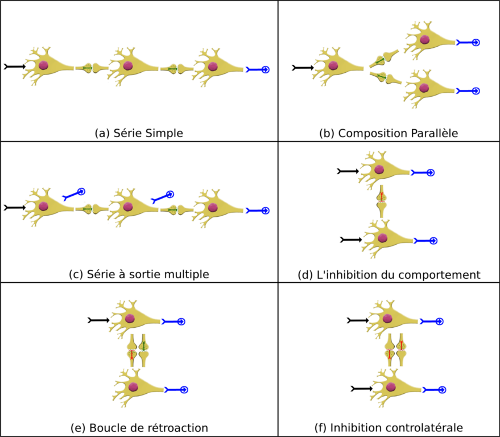
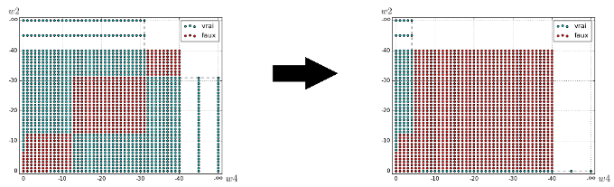
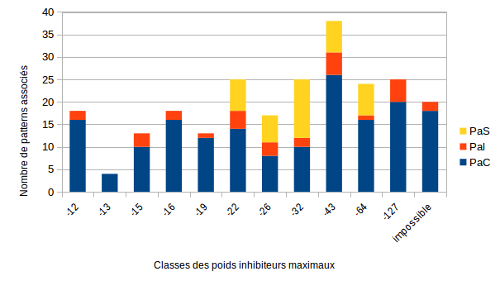

Modélisation et Vérification Formelle de la Composition d’Archétypes
Dans la littérature, les réseaux de neurones sont souvent représentés comme des graphes dont chaque nœud symbolise un neurone et chaque arc une connexion synaptique. Quelques graphes de neurones spécifiques ont une structure biologiquement pertinente et nous les appelons des archétypes. Six d'entre eux ont pu être caractérisés et validés en utilisant les méthodes formelles dans le cadre du projet MS&N du laboratoire I3S.

Dans cette étude, nous nous sommes attaqués à l'étape suivante de ce projet de recherche en étudiant les propriétés de leur couplage. Dans ce but, nous avons utilisé le modèle "Leaky Integrate and Fire" (LIF) et le langage de programmation synchrone Lustre afin d'implémenter les archétypes neuronaux et formaliser leur comportement attendu. Nous avons ensuite utilisé un "model checker" compatible appelé kind2 afin de valider ces comportements de manière automatisée.

En utilisant ces outils, nous avons validé de nouvelles propriétés associé au neurone simple, à des archétypes déjà testés et pour certains de leur couplage. Avec ces résultats, nous avons pu voir qu'un simple neurone LIF est restreint dans son comportement, mais une fois mis en réseau, la quantité de comportements possibles augmente. Lorsque ces archétypes sont couplés, soit leur comportement est sensiblement modulé (comme l'extension d'une période d'oscillation), soit il laisse place à un tout nouveau comportement.

Nous pouvons aussi observer que différents couplages d'archétypes peuvent avoir exactement le même comportement. Nos résultats montrent aussi que l'utilisation d'un modèle dépendant du codage temporel est plus appropriéqu'un modèle dépendant codage à taux d'émission pour ce genre d'étude.